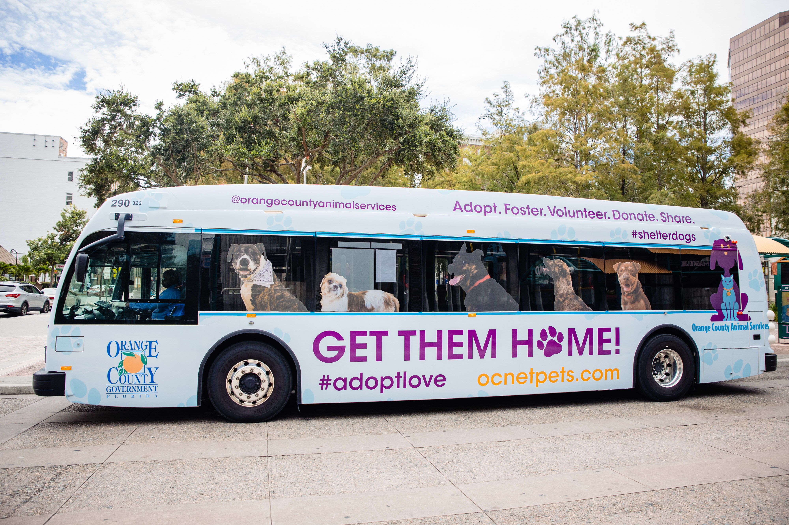
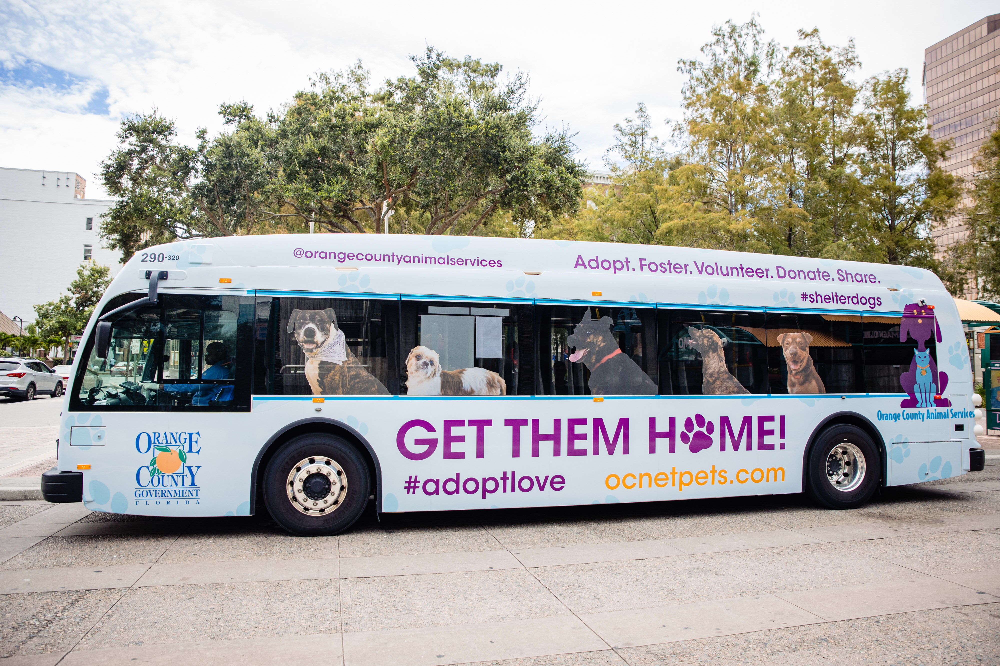
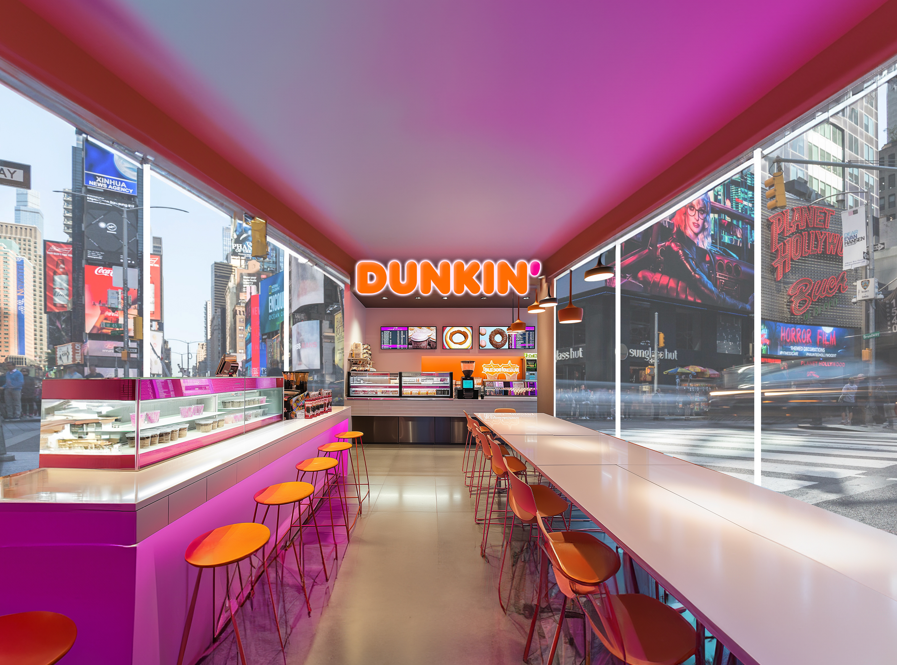
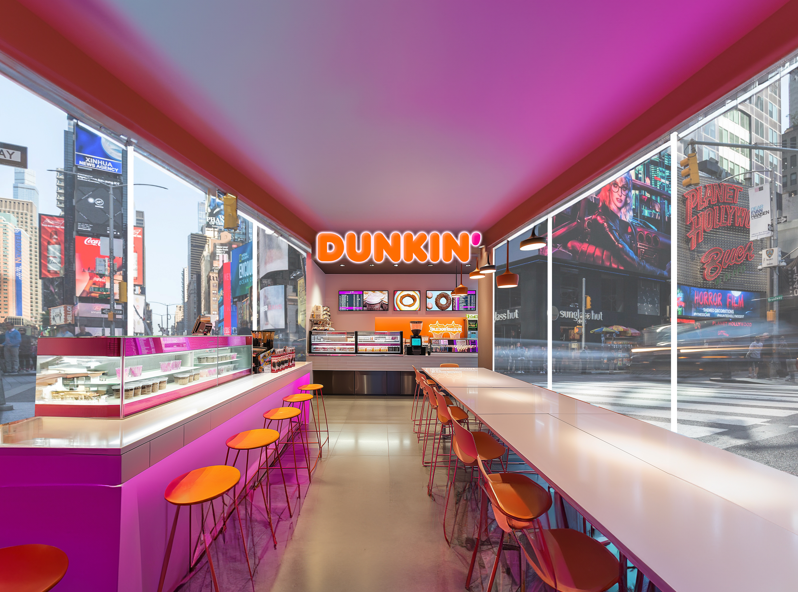
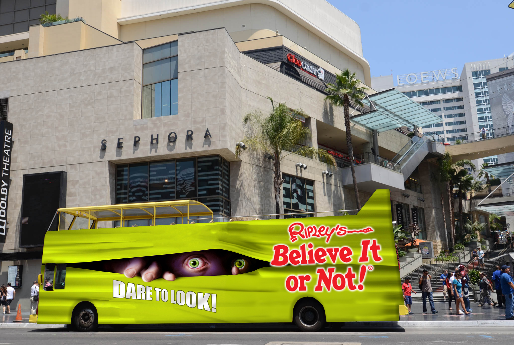
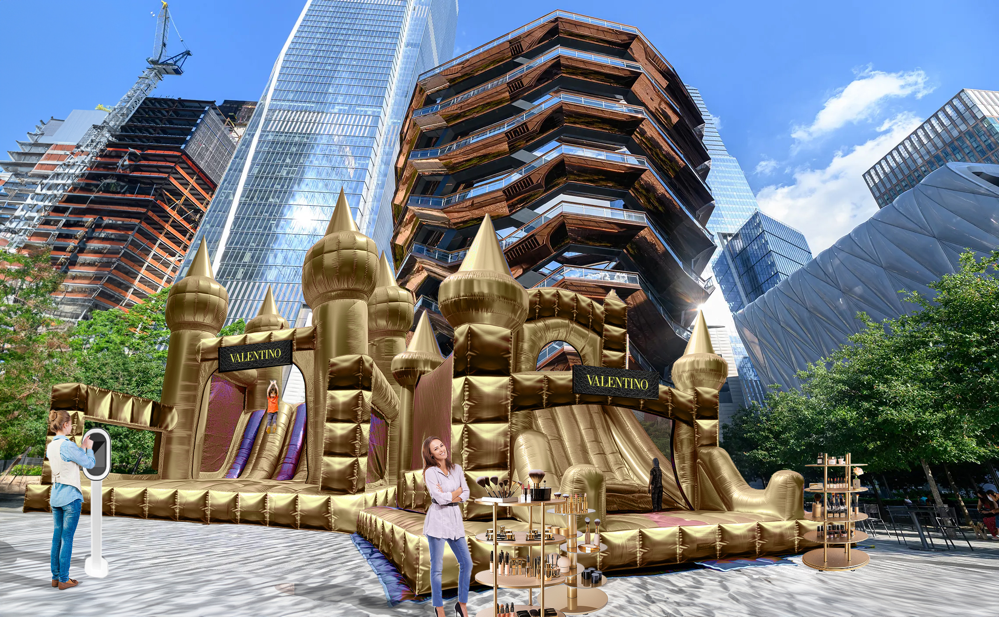
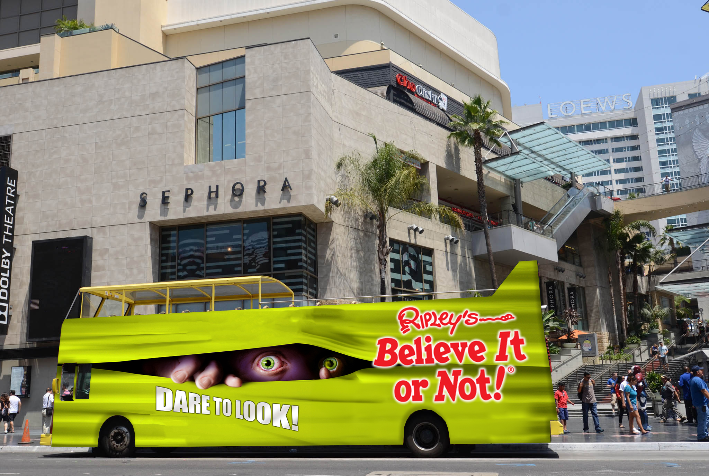
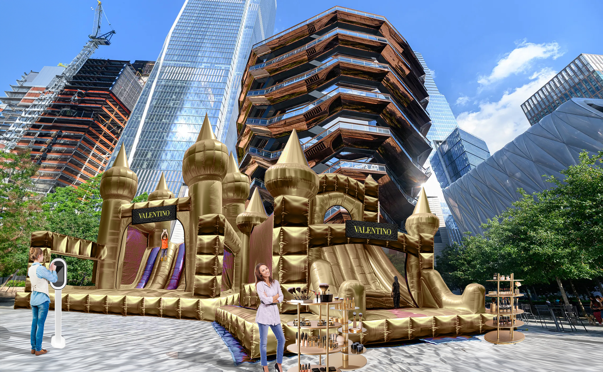

Vector Media
Diversity Equity Inclusion Identity
This identity was created to visually represent the principles of Diversity, Equity, and Inclusion (DEI). Equity is represented as fairness—ensuring that everyone has access to what they need, regardless of differing circumstances. This is illustrated through varying column heights, each supported by an additional rectangle so that all columns align at the same height. Diversity is conveyed through the use of varied shapes and colors within each part of the overall square. Inclusion is symbolized by these distinct pieces coming together to form a unified whole.
The development process began with research into existing DEI-focused brands, exploring how they visually communicated these three values. Common themes included overlapping shapes, vibrant color palettes, and the metaphor of puzzle pieces fitting together.
After conducting both visual and conceptual research, I created over 100 exploratory sketches. Featured below are four selected sketches that I refined further. The final direction was chosen for its ability to clearly and cohesively represent all three values. Each concept is expressed individually, while also contributing to a strong, unified brand identity.


Vehicle Wraps
During my time at Vector Media, I had the opportunity to work with a wide range of clients on numerous vehicle wrap projects. Designing for such a large-scale, mobile medium was an exciting challenge—and incredibly rewarding. Seeing my work displayed on buses traveling across the country gave me a new perspective on spatial design and how graphics can interact with public environments.
Collaborating with diverse clients taught me how to communicate effectively, interpret feedback, and deliver creative solutions that both aligned with client expectations and met my own design standards.
The first bus shown was a project I’m especially proud of. It was my first opportunity to design both the interior and exterior of a bus. This design was created for a Vector Media event, intended to showcase the bus as a customizable branding platform to prospective clients. My goal was to make the design bold and engaging while staying true to the company’s brand identity. The result was a cohesive, dynamic design that demonstrated the full potential of vehicle wraps as an immersive experience.


 

Mockups
In addition to designing bus wraps, I also created numerous mockups for prospective clients at Vector Media, a transit advertising and experiential media company. These mockups spanned a wide variety of outdoor formats—from large-scale transit applications to innovative event installations.
Each mockup presented a new challenge and an opportunity to think creatively about audience engagement. With few limitations, I was encouraged to push boundaries and develop bold, imaginative concepts that felt unique to Vector’s brand and offerings.
One particularly memorable concept, that will always make me laugh, was a Valentino-branded bouncy house placed outside Hudson Yards. Projects like this allowed me to explore how design can elevate an experience and spark conversation in the public realm.


 


 



Matua
This project highlights the mockup-to-execution process at Vector Media, showcasing how an initial concept was developed into a fully realized experiential activation.
Matua, an Australian wine brand, approached us with the challenge of creating a vibrant, engaging pop-up experience that would allow visitors to play games, enjoy wine, and relax—all while staying true to their brand and cultural roots. They also needed the activation to be mobile, with the ability to travel to major cities across the U.S. throughout the summer.
Using their goals as a foundation, I developed a detailed mockup that incorporated all requested elements—from interactive spaces to branded aesthetics. Once the concept was approved, it was translated into a 3D render and eventually brought to life as a full-scale activation.
The Matua experience traveled to several key locations, including New York City, the Hamptons, Austin, Miami, Huntington Beach, and San Diego, offering a consistent and immersive brand experience across all markets.